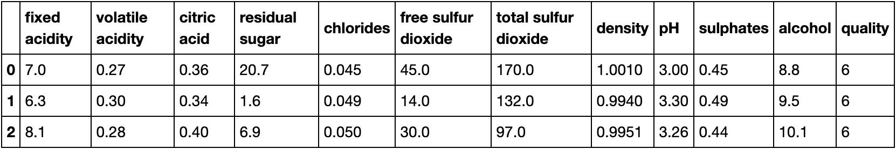
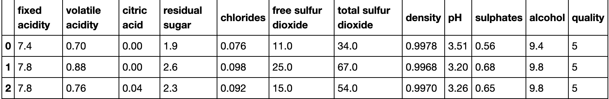
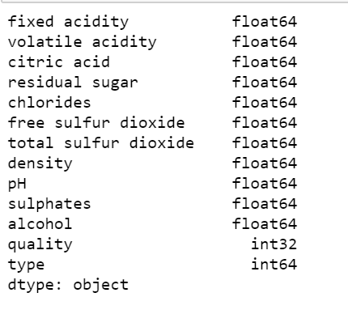
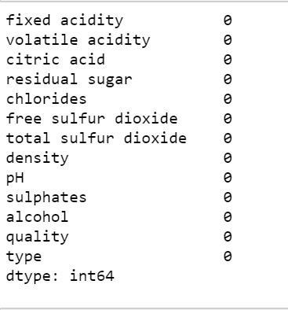
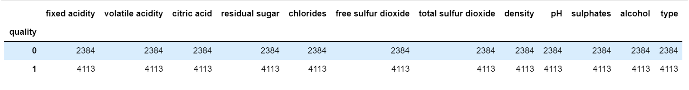
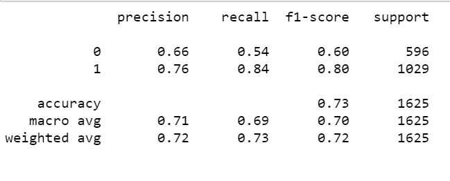

Vinho Verde Wine Analysis Dashboard
Use the interactive charts below to explore the dataset
Vinho Verde is a region in northern Portugal. It is comprised of nine sub-regions bordered by the atlantic ocean, mountain ranges, and a river, which kept the region fairly wet and rainy. Vinho Verde is associated for producing wines that has a light fizz.
Data Set Summary and Preliminary Analysis
Our project analyzes two datasets related to red and white variants of the Portugese "Vino Verde" wine
Data has been sourced from the UCI Machine Learning repository
The inputs in the datasets were results from physicochemical tests to characterize the properties of the wine, and the output is based on the ratings from human wine testers.
Wine Type:
Sample Record Count
White Wine Quality Attributes

Red Wine Quality Attributes

Preliminary data analysis:
Attribute data types
Check for missing values
Classifying all wines into two qualities: 0 (low quality), 1 (high quality)
Classifying all wines with quality less than or equal to 5 as low quality Classifying all wines with quality greater than 5 as high quality
Machine Learning Model and Analysis
Questions we hope to answer:
- How many input variables affect our data model
- Based on a wine's attributes, can we predict it's rating
Summary
- Machine Learning Model:Principal Component Analysis with Logistics Regression
- Number of Components Selected for Analysis: 9
- Data split for training and testing: Stratification methodology
- Model Accuracy: 73%
PCA Analysis with Logistics Regression Model
PCA analysis was conducted to find the most accurate model based on the number of components. Model was found to be most accurate with nine features. Logistics regression model was selected due to the binary outcome - quality wine or not. This model was found to provide the highest accuracy scores compared to random over/under sampling, SMOTE, SMOTEEN
Number of components versus accuracy chart

Classification report
- Accuracy scores with:
- SMOTE: 72%
- Random Over Sampler: 72%
- Random Under Sampler: 72%
- Cluster Centroid: 71.5%